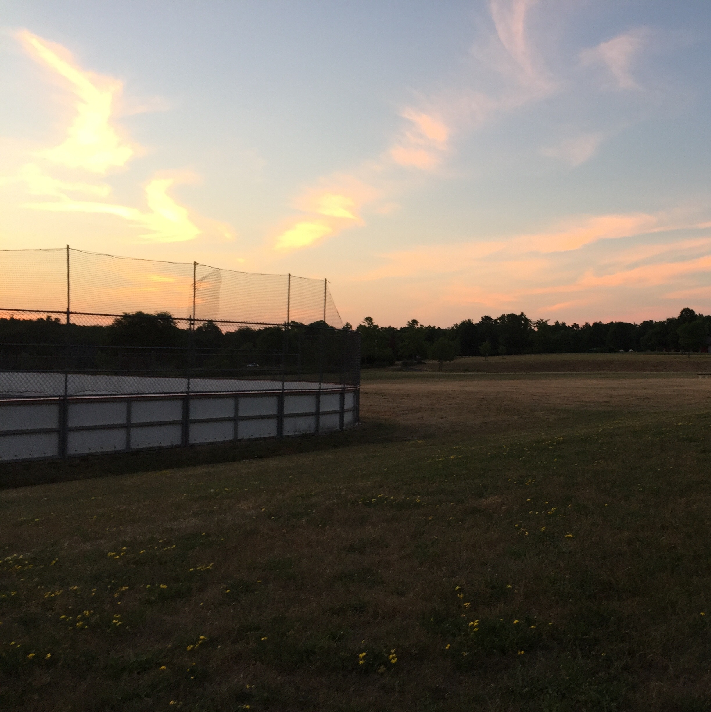

Listened to: Coloring Book, Panda, In Colour, Millennial
Had to keep starting and stopping during my run because my legs were hurting. I think I stopped a total of 4 times, hence the multitude of different Listened to's. I can't complain too much though, just look at the sky.

I didn't do much today really, but I did stay up very late reading Lies and felt utterly liberated and at peace when I set the book down and drifted to sleep, so that was divine.
Home Prev Next